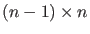
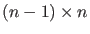
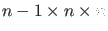
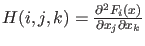
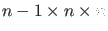
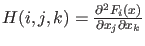

Next: Singularities and test functions Up: Options Previous: The options-structure Contents
If cds.symjac , then a call to feval(cds.curve_jacobian, x) must
return the  Jacobian matrix evaluated at point
, then a call to feval(cds.curve_jacobian, x) must
return the  Jacobian matrix evaluated at point  .
.
If cds.symhess , then a call to feval(cds.curve_hessians, x) must
return a 3-dimensional (
) matrix such that
.
, then a call to feval(cds.curve_hessians, x) must
return a 3-dimensional (
) matrix such that
.
In the present implementation in most cases cds.symhess, so the ODE-file does not provide second order derivatives, since they are not needed in the algorithms used.